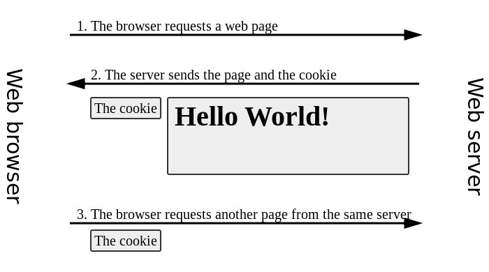

Code Sensei
Wat kun je mij vertellen over de HTTP Request/Response cyclus?
De 3xx statuscodes zijn een verzoek aan de client om het elders te proberen.
Leveren dus een nieuwe request op.
Subtiel verschillende statuscodes: zie Wikipedia
Je hebt geen garantie dat de client zich hieraan houdt!
Servlet: response.sendRedirect()
HTTP is stateless. Wat houdt dit ook alweer in?
Een manier om toch een soort state bij te houden over HTTP.
Een cookie heeft een naam, een waarde, en enkele attributen.

Zijn beperkt tot het domein waarop de site geserveerd wordt
Een cookie van google.nl wordt dus nooit naar facebook.com gestuurd
Zie Wikipedia
Dit mechanisme wordt gebruikt voor login.
Als je nu een request krijgt met dit secret erin, weet je dat het om de ingelogde gebruiker gaat.
Zo'n sessie kan verbroken worden:
Het woord "session" kan betekenen:
Om data vast te houden tussen requests, kunnen we het Session object gebruiken.
HttpSession session = request.getSession();
session.setAttribute("username", "reindert");
Bij een volgende request, op een andere pagina:
HttpSession session = request.getSession();
String username = (String)session.getAttribute("username");
Je kunt een boolean waarde meegeven aan getSession().
HttpSession session = request.getSession(false);
De boolean bepaalt het gedrag als er nog geen sessie is:
true: automatisch nieuwe sessie aangemaaktfalse: return nullsession.invalidate()Dezelfde servlet-instantie kan requests van meerdere gebruikers afhandelen
(denk aan hoger/lager met meerdere users)
Bovendien kunnen er meerdere threads tegelijk van dezelfde servlet gebruik maken
Daarom mag een servlet nooit state hebben:
Gebruik request.getSession() om state bij te houden voor een gebruiker
Dit zorgt dat er een session cookie aangemaakt wordt